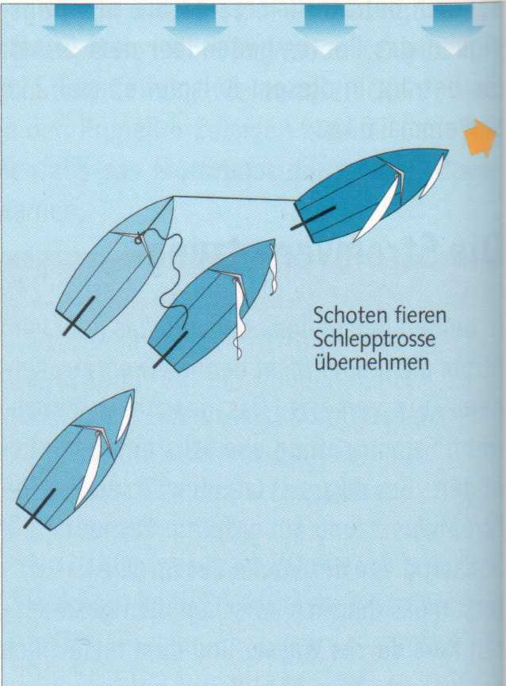
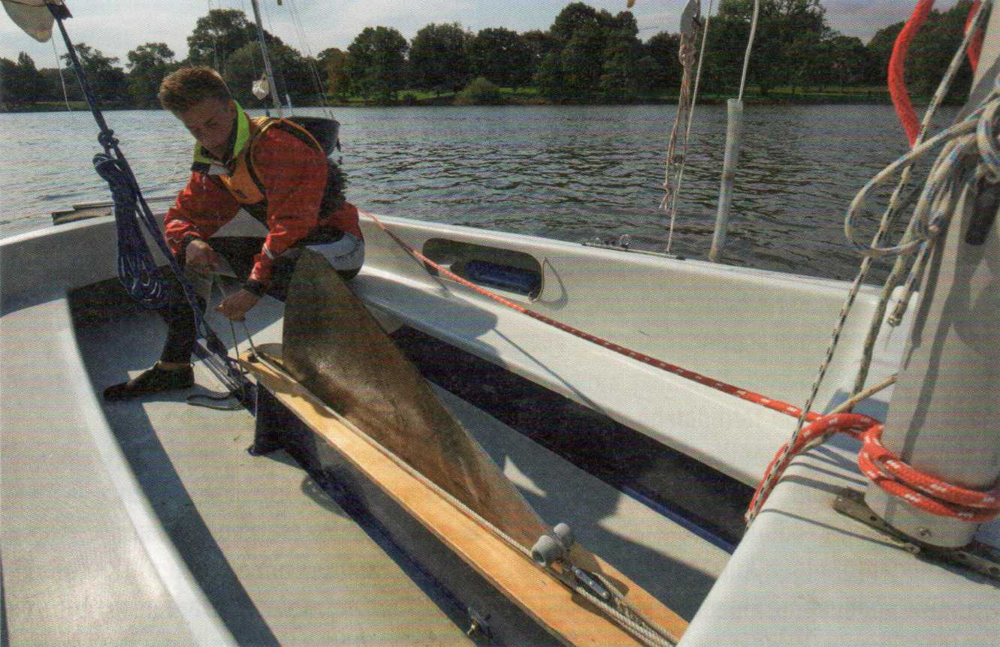
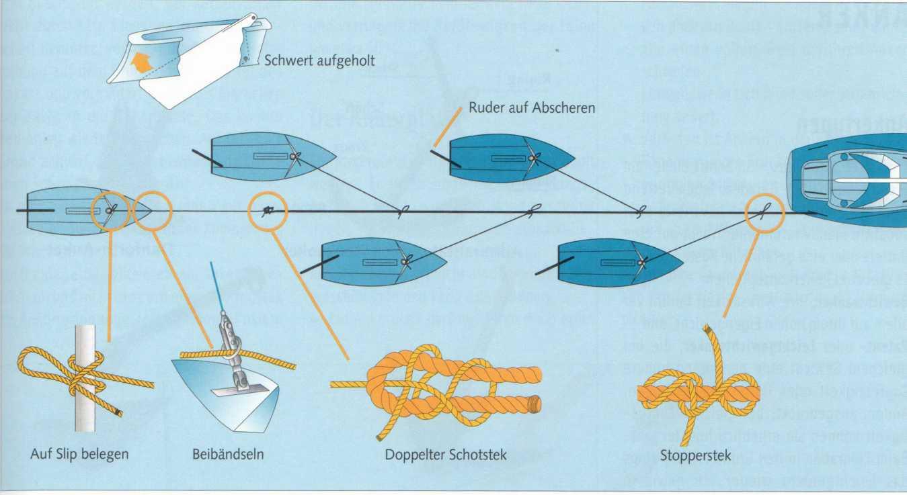
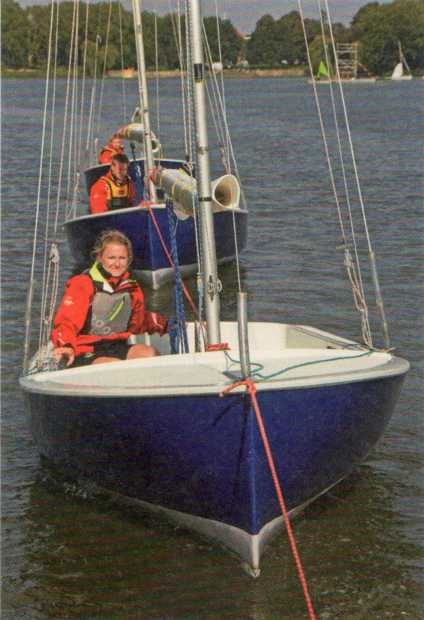

Wer auf den Haken genommen, das heißt geschleppt werden will, schwenkt einen Tampen oder die in Buchten bereitgehaltene Schleppleine. Ist ein Schlepper gefunden worden, heißt es auf einer Jolle: Segel bergen und Schwert hoch.

Ist der Schlepper ein Segler, nimmt er die Schleppleine in Lee über. Da sich ein treibendes Boot in einem Winkel von etwa 50° zum Wind anstellt, läuft der Schlepper hoch am Wind an. Er braucht in Höhe des Havaristen nur die Schoten zu fieren, um zum Stillstand zu kommen, in Ruhe die Leine zu übernehmen und bei sich an Bord zu belegen. Dann die Schoten anholen und langsam die Leine steiffahren. Danach weiter abfallen, um mehr Fahrt aufzunehmen und die anfängliche Masseträgheit des Schleppanhangs zu überwinden.
Läuft die Schleppleine auf dem geschleppten Boot an Steuerbord am Vorstag vorbei, wird sie auf der Achterklampe des Schleppers an Backbord belegt - oder umgekehrt.
► Ist der Schlepper ein Motorboot oder ein Segler mit starker Maschine, muss er seine Fahrstufe der Rumpfgeschwindigkeit des geschleppten Bootes anpassen, sonst kann es kentern.
Der Schlepp durch Berufsschiffe ist deshalb für ein kleineres Boot immer risikoreich, denn sie müssen Geld verdienen und können auf die Rumpfgeschwindigkeit ihres Anhangs keine Rücksicht nehmen.

Ein aufgeholtes Schwert verhindert ein Querschlagen beim Schleppen.
Ist eine Vorschiffsklampe vorhanden, zunächst nur mit einem Rundtörn belegen, um beim Anschleppen elastisch nachgeben zu können und ein hartes Einrucken der Leine zu vermeiden. Auch lässt sich der anfängliche Geschwindigkeitsunterschied zwischen Schlepper und Geschlepptem durch leichtes Nachgeben ausgleichen. Dann den Tampen der Schleppleine mit Webeleinstek auf Slip am Mast belegen, um notfalls schnell loswerfen zu können.
Im Seegang die Leinenlänge so bemessen, dass sich beide Boote immer in der gleichen Wellenphase befinden. Besatzung nach achtern, damit das Boot nicht giert, das Vorschiff entlastet wird und der Bug nicht unterschneidet.
Ist keine Vorschiffsklampe vorhanden, wird die Schleppleine am Vorstag festgemacht.
► Beim Motorschlepp sich seitlich vom Schlepper halten, damit man aus dem unruhigen Schraubenwasser heraus ist. Muss das Motorboot plötzlich stoppen, läuft die Jolle seitlich vorbei und kollidiert nicht mit dem Heck des Schleppers. Kurven nicht schneiden, sondern immer den Außenradius nehmen, auch wenn man dabei die Heckwelle des Schleppers queren muss.
► Bei schnellerem Motorschlepp ist es meist sinnvoll, das Ruderblatt ebenfalls aufzuholen und die Pinne mittschiffs zu laschen. Das Boot folgt dann unmittelbar der Zugrichtung der Schleppleine. Ein unbeabsichtigt harter Ruderausschlag könnte sonst eventuell zu einer Kenterung führen oder zumindest zum Bruch der Vorschiffsklampe.
Sollen mehrere Boote an einer Schlepptrosse geschleppt werden, machen sie abwechselnd auf Lücke mit Stopperstek fest, die schweren Boote vorn. Nebeneinander festgemacht, würden sich die Bootskörper gegenseitig ansaugen.
Auf dem letzten Boot am Tampen wird die Schleppleine wie beim Einzelschlepp belegt. Auf den seitlich angesteckten Booten darf sie nicht am Vorstag beigebändselt werden, auch nicht auf einer weit vorne sitzenden Vorschiffsklampe belegt werden, denn der Bug muss abscheren können, um geradeaus zu laufen. Bewirkt wird das Abscheren durch Gegenruder.

